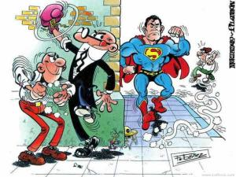

TIA
 De: La Frikipedia, la enciclopedia extremadamente seria.
De: La Frikipedia, la enciclopedia extremadamente seria.
TIA, o Técnicos de Investigación ¿Aeroterraquea? es una organización sin ánimo de lucro (¡Anda yaaaa!) que se dedica a luchar contra el mal y las compañías discográficas, para lo cual cuenta con un elenco de superagentes especiales entrenados en las condiciones más extremas (alimentándose a base de fabada caducada, ya que no les alcanza el presupuesto para más) y preparados para cumplir las misiones más complicadas (tranquilos, los gastos por posible entierro de agente corren a cuenta de El Super, a no ser que el susodicho agente le caiga mal, o sease, casi el 90% de las veces):
Aquí tenemos al personal de la Tia haciendo lo que mejor sabe hacer.
Historia
Se cree que fue Fundada en el año 984 antes de Tolkien por el bellaco científico loco Eggman y sus brutales esbirros, la raza Skrull, con el interés de conquistar el mundo, pero el Supersaiyan Son Goku, acompañado del príncipe Vegeta y con la desinteresada ayuda de Bud Spencer y Terence Hill, trató de desmantelar la organización. La batalla fue brutal: Mientras Son Goku tiraba Kame Hame Has a diestro y siniestro para desbloquear puertas a su manera, Vegeta fue por el otro lado para encontrar a Eggman y liquidarlo con un Final Flash. Por su parte, Bud Spencer y Terence Hill fueron dando de lo suyo a los Skrulls, haciéndoles volar sin necesidad de polvos de duende. Al final, Bud Spencer estuvo a punto de sacrificarse por la humanidad oprimiendo el botón de autodestrucción de la sede, pero Terence Hill salvó a su amigo en el último segundo cogiéndose de una lámpara y agarrando a su seboso compadre con la otra mano, llevándolo lejos de la onda expansiva que acabó con Eggman, sus locos deseos ambiciosos y su organización.
Una vez fue desartículada, su lider se pasó al lado de los superguerreros porque ya estaba harto de que le dieran la del pulpo. El edificio que servía de sede a sus locos propósitos fue reutilizado como un centro de rehabilitación para gnomos psicópatas descontrolados después de ver cuarenta veces seguidas la muerte de Chanquete por TV. Pero, en el año 1200 después de Tolkien, un alto dignatario español (conocido por el seudónimo de Francisco Ibáñez) decidió remodelarlo y convertir el edificio en una organización secreta dedicada a salvaguardar el mundo, y de paso, competir contra los yanquis, que en esos momentos controlaban el monopolio de los agentes secretos con Maxwell Smart. Así se creó la TIA (Aunque en un principio el nombre hacía adulación a la tía abuela de Eggman, Francisco Ibáñez decidió cambiar su significado convirtiéndolo en siglas y así Técnicos en Investigación Aeroterraquea sonó bastante mejor).
La TIA, en sus primeros días, fue recibiendo la visita de los más singulares personajes, desde Anacleto (gran maestro de las llaves), el Doctor Extraño (superhéroe Otaku) hasta Pocholo (este, diréctamente, es idiota). Aunque el negocio no empezó a flotar hasta que un tipo conocido como Super Intendente Vicente (Sí, en realidad se llamaba así, él mismo se puso lo de Super Intendente por su ego monstruoso) tomó las riendas de la organización.
Más tarde ingresarían en ella dos supersaiyans llamados Mortadelo y Filemón, que pasarían a sus filas como los agentes mas roñas pero a la vez los mas geniales de la historia de la organizacion. Los de Supersaiyans es pura coña, pues no llegan siquiera al 2º Nivel (más que nada, porque, aunque llegasen, son calvos, y no se notaría que su pelo se haya vuelto rubio). De todas formas, se inscribieron con nombres falsos en sus currículums, haciéndose llamar El Nuevo Bardock y Broly II, y, al tener unos nombres tan chorras, El Super se lo tragó...
Objetivos primarios de la TIA:

Archivo Top Secret. Rogamos a todo aquel que no sea agente predilecto de la organización que no lea las siguientes líneas, bajo pena de soltarle a estas dos malas bestias.
- Proteger el mundo de su total aniquilación.
- Proteger el desayuno de su total degullición.
- Coger una gorgoza y fliparlo mogollón.
- Proteger a ancianitas desvalidas al cruzar la carretera (con irónico resultado).
- Competir contra los yanquees y contra James Bond (con irónico resultado).
- Luchar contra Mafio y sus pandilleros (con irónico resultado).
- Localizar a los Supersaiyans vivos que quedan en la galaxia.
- Asegurarse de que Ana Obregón no vuelve a hacer una serie.
- Encargarse de la lista de la compra del Super.
- Completar las Doce Pruebas de Hércules a la pata coja y con botijos colgando de los pelos de sus sobacos (Para qué, ¿Y yo qué se?).
- Combatir a los Decepticons.
- Combatir a Godzilla (Si en Japón o en EEUU se ocupa de él todo el ejército de Marines, aquí en España, les tiramos a las dos sílfides éstas con un hacha y un escudo del todo a cien en las manos de cada uno, y ya se puede preparar la lagartija esa).
- Salvaguardar el Arca de la Alianza.
- Contactar con El Último Guerrero desde el Más Allá.
- Esconder de los científicos a La Cosa (Un ser Intergaláctico, último superviviente del planeta Jaden, cuyo rostro es dificil de determinar, el cual vive en su sotano y se alimenta exclusivamente de revistas pornográficas (el Interviu no le vale) de agentes secretos inútiles y mafiosos gordos.
- Ganar la Loteria.
- Darle sangre al dios de la sangre.
- Servir de sacos de hostias a los luchadores del Pressing Catch.
- Sacarse los mocos.
- Procurar que Galactus no se coma la Tierra.
- Procurar que Galactus se coma el planeta Ratikulín (a poder ser, con sus habitantes y todo).
- Ligarse a la tipa que vive en el segundo piso de tu bloque.
- Procurar que no te enteres, aunque seas su novio.
- Engatusarla para que te abandone por Mortadelo.
- Comer pimientos de padrón
- Comprobar si unos pican y otros no
- Comer Chilly picante
- Comprobar que todos pican (¡Y un huevo!)
- ...
Agentes de la TIA (y otras personas que, aunque no tengan nada que ver, son vitales para comprender sus desmanes):
Mortadelo disfrazado de El Neng
- Mortadelo: El superguerrero calvo y con gafas de Adamantium, con el poder especial de ocultarse poniendo disfraces (en 3 segundos y con dos pausas para tomarse unas copitas) y que gusta de atacar por las espaldas. Aunque sufre de maltrato por su jefe y su superintendente, el tio resiste. Es un superviviente. Mortadelo es más poderoso que su jefe, pero aún así, no se atreve a hacerle frente, (más que nada, por el arsenal de armas de destrucción masiva que guarda celosamente en su casa, al más puro estilo Men in Black. De los dos agentes, Mortadelo es el que casi siempre se gana el reconocimiento del público, y el más carismático (Prueba a ir a una tienda de cómics, y estate atento a cuando alguien pida un tebeo de Mortadelo y Filemón: te darás cuenta de que casi siempre suele pedir "un tebeo de Mortadelo" y no "un tebeo de Filemón"). Mortadelo suele ser el que jeringa en las misiones, casi siempre para desgracia de su pobre jefe. Si existe un cómic en que Filemón sea el que la cage antes, tranquilo, no va a desencadenar un desbarajuste espacio-temporal que reviente el universo: Seguro que al final del cómic Mortadelo la caga más aún, y así la continuidad de la galaxia vuelve a la normalidad. Es un Trekky, y no le gusta reconocerlo, ¡pero anda que no se le ha visto en miles y miles de convenciones de Star Trek!. Lo que pasa es que va disfrazado, claro, y por eso no le reconocen. Cuando en programas frikis de la TV como Cuatrosfera aparecen miles y miles de individuos disfrazados de bichejos frikis, fijate en el disfraz más friki de todos: ése seguramente es Mortadelo, aunque te haga creer que es Pepito Piscinas, Manolo el del Bombo o Don Patch.
- Filemón: El segundo superguerrero con dos pelos y con pinta de esparrago, que con sus 2 pelos expulsa descargas eléctricas a lo Pikachu. También conoce el ataque de Flatulencia Extrema, pero por el riesgo a volar la tierra, nunca lo usa. Antes en su agencia de informacion era el jefe de Mortadelo,y lo unico que hacia era sentarse a echar la mona bebiendo whiskis y fumandose cachimbas que lo flipabas, mientras jodía a Mortadelo un poco enviandolo a realizar misiones vitales para el futuro de la humanidad, ya fuera detener una horda de Orcos y Uruk-Hai en época de celo él solito, aniquilar a Magneto con la ayuda de un tirachinas y un pedrolo, o traerle el bocata cuando tuviera hambre (con un botijo sostenido en equilibrio sobre su cabeza y dos armadillos bailando el chotis encima de sus gafas),etc. Ademas, tiene un arsernal de armas que usa siempre que Mortadelo la pifia, o cuando le da la real gana,da igual. Filemon, en sus múltiples carreritas, puede perseguir a Mortadelo con un tanque, un tomahawk gigante, un bazooka de la Segunda Guerra Mundial o incluso un León fiel (Se dice que hasta tiene en su poder la Big Focking Gun, pero no la usa, debido a que Mortadelo aún no la ha cagado tanto como para merecerla (pero, quién sabe). También se dice que puede convertir sus dos pelos en la espada Excalibur y en la Espada Don Patch. Hay algo incomprensible en todo esto, pues, si tiene todo este arsenal de destrucción masiva que ya quisiera Duke Nukem, ¿Por qué se queja del poco dinero que gana? Seguramente se lo gasta todo la primera semana en armas chorras de ese tipo, o en amaestrar a su león. Y, por otra parte, en la TIA, Filemón ya no es el jefe de Mortadelo, asi que... ¿por que coño le sigue llamando jefe? Algunos dicen que por mania, otros que por paranoia...
Además, aparte de llevar encima tantas y tan variadas armas, el principal atributo de Filemón es su inusitada resistencia física. A Filemón le ha pasado prácticamente de todo: le han golpeado, apalizado, achicharrado, arrojado por ventanas de rascacielos, engullido (los perros, cocodrilos y leones nunca le muerden: le engullen), le han explotado en la cara todo tipo de explosivos (llegó incluso a estar en el epicentro de la detonación de la bomba atómica de Hiroshima)... y sin embargo, tras perseguir o vapulear cabreado a Mortadelo, aparece en la siguiente viñeta tan pancho, sin ningún rasguño ni chichón, e incluso con la ropa en perfectas condiciones (hasta la pajarita perfectamente anudada). Tal nivel de invulnerabilidad jamás se había visto en ser alguno de nuestra galaxia (o de otras). Probablemente estemos ante el único ser de la creación que, aunque no pudiera derrotarle, podría sobrevivir a un duelo a muerte con Chuck Norris.
- El Super: Jefe de la organización, sin poderes,excepto el miedo que mete su mostacho de foca y la mala leshe que trae encima. Como de pequeño siempre se metian los mas tontos contra el, fue irradiando una mala uva interior que ahora exterioriza con Mortadelo y Filemon mediante:
- Insultos.
- Tortazos.
- Vengazas absurdas, como hacerles caer encima todo el peso de la Ley (Ley es el nombre de una elefanta de ochenta toneladas)
- Y, sobre todo, misiones peligrosas que les da ya que no quiere perder a nadie de sus agentes favoritos(todos menos ellos). Aunque no tenga poderes reconocidos, algunos aseguran que, cuando se irrita más de lo debido, su cuerpo sufre una transformación súbita que le convierte en una mala bestia de doscientos kilos y de color verde, pero, eso sí, con mostacho y conservando intactos sus pantalones. Mortadelo y Filemon no pueden revelarse contra el, ya que si lo hacen,se juegan el despido y el paredon; (aparte de enfrentarse a su otro yo verdoso). Curiosamente,todas las misiones de la TIA se las encarga a ellos. La pregunta es: ¿que hacen los demas agentes, como Micróbiez, Bestiájez, o Anacleto (éste último está muy olvidado ya, el pobre)?, ¿dormir a pata suelta o que? Forma parte de los tios con el bigote mas ridiculo del mundo,entre los que figuran Mario y Cálico Electrónico.
- La Ofelia: Ex mujer de mortadelo, fan de La cerdita Peggy, secretaria de la agencia y una gorda de cuidado. Se le conoce tambien como:
- La Vacaburra.
- La Foca Salida.
- La Tetuda.
- La Bestia.
- La novia de King Kong.
- El Mastodonte antediluviano.
- La taquillera del pueblo de Mortadelo, que estaba tan gorda que ocupaba todas las butacas y la gente tenía que ver la película desde la taquilla (ésto es verídico).
Aunque tenga pinta de indefensa,tiene una fuerza descomunal y pega hostias mas fuertes que las de John Cena con sus descomunales pezones. Ademas,es una Lucrecia Borgia, ya que sus recetas son venenosas para el consumo. (Que se lo digan al jefe de la organización terrorista ABUELA, que nunca jamás volvió por su propio pié de su intento de gamberrada contra la TIA).
- Bacterio: Un tío con pinta de sátiro con malas pulgas, pero aparentemente ingenioso. Fue el causante de la calvicie extrema de Mortadelo y de que el Dr. Infierno sea así de feo. entre sus logros en el campo de la ingenieria bacteriológica se encuentran:
- La Maquina del Cambiazo (inolvidable).
- El Telefruski. (Permite viajar al interior de las películas. ¿A quién le hace una visitilla en profundidad a "Garganta Profunda"?
- El Sulfato Atómico. (Hace crecer a los insectos. Se dice que Lord Zet, el villano de los Power Rangers, quiere hacerse con ese instrumento, pues está harto de que esos incompetentes de Saban le fabriquen monstruos absurdos y cada vez más tristes; anda que no luciría él con una Mantis Religiosa de cuatro metros de altura).
- Las Boinas letales (Disparan rayos de energía Futónica, como la boina de Agamenón ¿Que Agamenón no hacía eso? ¡Anda que no, si era igualico, igualico, que el defunto su agüelico!).
- El inodoro volante (Un tanto asquerosete de ver).
- La Gallina de los huevos de oro (Al final, resultó ser un truño).
- La Maquina de Copiar gente (Hay dos versiones: Una es la que construye clones imperfectos con patrones de pensamiento cambiados (como, por ejemplo, un clon de Hitler amable y justo o incluso un clon de Belén Esteban con un coeficiente intelectual normal). La otra, más jodidilla, hace clones directos de las personas que entran en ella, sin personalidad, pero perfectos en estética; salvo en el detalle de que, si se agujerean, se desinflan automáticamente. Si alguna vez ves a un compadre tuyo después de una resaca hundiéndose cada vez más en el suelo, desconfía).
- La Maquina que hace realidad las novelas (es rayante, pero existe. ¿Por qué no hacen realidad al personaje de Clara de Noche?).
- La Tergiversicina (Aparato que vuelve del revés las cosas (como lo que le sucede a la mayoría de los inventos de Bacterio, pero éste en especial, funcionó, qué irónico).
- La Lámpara de ondas hertzianas kiliborrucleicas que afectan al cerebro después de su exposición en la cabeza tras una lectura apasionada O LOHKQAACDDSEELCTULA. ¿Lquacdselctula? Jo, suena a bichejo japonés de la Isla de los Monstruos). La cuestión es que este invento, que realmente aparece en el cómic original, convirtió a Mortadelo en Billy el Niño y a Bacterio en Superman. Como ya se ha dicho, todo le suele salir al revés de como se lo planteó en un principio. Puede que experimentara con su propio cerebro, y, posteriormente, se lo dejara colocado por el lado equivocado.
- Sus aficiones (es un tanto Masoca, avisamos) son:
- Que le cuelguen por las barbas de un tranvía.
- Que lo tiren por la cisterna del váter.
- Que lo introduzcan a pelo dentro de un canalón.
- Que le metan en un horno a presión, aunque sea claustrofóbico.
- Que le hagan volar sobre un avión de papel tirándolo por un precipicio.
- Que le conviertan a él mismo en un avión de papel y tirándolo por un precipicio.
- Que le encasqueten un semáforo por una oreja, de forma oportuna para que éste sobresalga por su otra oreja.
- Que le tiren ficheros encima (preferíblemente, abiertos por la "B".
- Que lo lancen a una velocidad aproximada a la de la luz contra un muro de ladrillos, con tal de probar en sus propias carnes el análisis del impacto. ¿Muñequitos a escala real para pruebas con coches? ¡Anda ya!
Como el Super Intendente Vicente está a partir de un piñon con Mortadelo y Filemón, se dice que contrató a Bacterio para que el les hiciera la vida imposible a base de inventos, e intentar hacerlos desaparecer de su agencia sin despidos.
- Rompetechos: El creador de la expresión "No ver tres en un burro" refiriéndose, claro está a Mortadelo, Filemón y Ofelia cabalgando sobre bacterio un día de "Asuntos Propios" Tiene gafas de culos, si, nada de gafas de culo de botella, sino gafas de culos, por lo que se pasa "todo el día concentrado" sin poder fijarse en otra cosa. En los tebeos de Moradelo, hace de testigo 'ocular', de miembro del jurado, de agente secreto, y de un vulgar ciudadano. Se dice que es un emperchao, amante de Franco (en el otro sentido, cacho enfermos sexuales). En un capitulo, El Ronpetechos intento salir de la officina de la TIA por la Pantalla del ordenador y en otro momento intento salir por el WC.
- El botones Sacarino: Personaje gilipollas rarito, que sale solo en un cómic, presenciando un crimen. Aún le buscan para darle con un palo.Sobre todo, el Director del "Aullido Vespertino" por hacerle quedar mal con el Presidente, el cual está convencido de que el Director pertenece a una secta satánica con el destino de sacrificarle a su Dios de la Guerra, de tantas veces que las propicias desventurillas del botonés han llevado a malentendidos por parte de estos dos pobres seres humanos.
- Irma: La típica secretaria sexy que solo aparece en unos cuantos cómics de los noventa. Secretaria novel que hace bién su trabajo, pero que esconde una retorcida historia que no será revelada aquí. Trae loco a Mortadelo, más aún que Pamela Anderson, y, como es natural, se ha ganado toda la antipatía de la Bestia... este, la Ofelia. Últimamente este personaje no suele aparecer en los cómics, fastidiandole así la paja a miles y miles de españoles.
 La famosa imagen en cuestión.
- Superman: Ha aparecido en tantos cómics de Mortadelo y Filemón ya, que es como un personaje más. Ya sea como agente especializado en buscar a los demás agentes cuando estos se escaquean de una misión jodidilla, como justiciero salvando a un pobre niño de ser atacado por Mortadelo, como amigo estrechador de abrazos bestiales, o incluso como compañero de portada (Esa portada que aparece en la Colección Olé, en la que Mortadelo está a punto de asestarle un puñetazo al del otro lado creyéndose que es el "Matraca" cuando en realidad es Superman, que en esos momentos pasea por allí...) Muchos tratan de conjeturar cual será el final de tan macabra casualidad: que si Superman hara picadillo a Mortadelo, que si hara picadillo a Filemón, que si hará picadillo a ambos, que si hará picadillo al maldito extraterrestre que también aparece en la portada meando en el suelo, que si el guante de boxeo de Mortadelo estará compuesto por fragmentos de Kryptonita, y harán mella en Superman, que si renacerá El Fary y les cantará una tonadilla... Pero eso, solo Francisco Ibáñez lo sabe.
Objetivos futuros
Aparte de dominar el mundo, la TIA tiene otros objetivos como:
billete falsificado por Mortadelo que no pasó la Aduana. ¡No lo entiendo, si casi ni se nota!
- Hacer el gilipollas.
- Devastar el mundo a golpe de pedo.
- Hacerles la vida imposible a Mortadelo y Filemón.
- Hacerle tragar a Bacterio la tapa del váter.
- Dejar el Mundo hecho una mierda.
- Convertirse en supersaiyans de nivel 5; o más bien, en supergilipollas.
- Tachar las cosas de esta lista una vez estén resueltas.
- Encontrar un boli de colorines para tachar esta lista.
Esta organizacion se mantiene en el anonimato, porque, de saberse de su existencia, la cerrarían sin remedio. El emplazamiento de la base cambia cada poco tiempo, no debido a razones de seguridad, si no a pepinazos atómicos y otros cataclismos provocados por Mortadelo y Filemón o, en su defecto, por Bacterio.
Su creador,(algo así como el capitán de la cinta roja), se basa en conquerir el mundo a base de papel y lápiz, pues son sus únicas armas. El tipo este llamado Francisco Ibañez, intenta vencer a sus principales enemigos de cómic, como Akira Toriyama o Gosho Aoyama. Últimamente anda por las últimas intentando acabar un cómic ya que pasan 3 años cuando acaba uno.
Estatutos de la TIA
- Artículo 1: La TIA es una organizacion no gubernamental, o sea, que no sólo no tiene nada que ver con el gobierno, si no que además es ilegal.
- Articulo 2: La TIA no es una organización con animo de lucro. En todo caso, con animo de luto, dada la alta siniestralidad de sus actividades.
- Articulo 3: La TIA colaborará siempre con las fuerzas y cuerpos de seguridad del estado excepto los domingos despues de comer por ser la hora de la siesta.
- Articulo 4: Un agente no morirá sin la autorización del super.
- Articulo 5: Todo agente muerto en acto de servicio no recibirá el lote de navidad.
- Articulo 6: La TIA cumple con todos los tratados de no proliferación de armas de destruccion masiva excepto uno: El protocolo de Calahorra que prohibe el uso de pedos de burro por considararlos arme química.
- Articulo 7: COMODÍN: El Super se reserva el derecho a inventarse un nuevo articulo para usarlo a su antojo.
- Articulo 8: El Super siempre tiene razon.
- Articulo 9: En caso de que no la tenga tampoco la tendrá ningun agente.
- Artículo 10: En el caso poco probable de que un agente la tenga estos estatutos se autodestruiran en 5 segundos (4 en canarias)
Estos articulos han sido sacados del librito Guia para la Vida de un Agente de la TIA,y son 20. Si quieres verlos todos,te vas a comprarlo, que la guia solo vale 10 eurillos, hombre, por un poco de cultura, no vamos a fallecer, oye.
Autor(es):
- Krusher
- Doctor grijander
- Frikiman
- Alex2610
- Azulejos
- MarioDS
- Erazor
- Wwtawriter112
- Halloween94
- Harry El del Pote
Frikipedia 2005-2016, Licencia
GFDL 1.2 - Extraído por FrikiLeaks